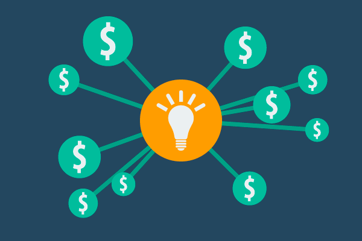
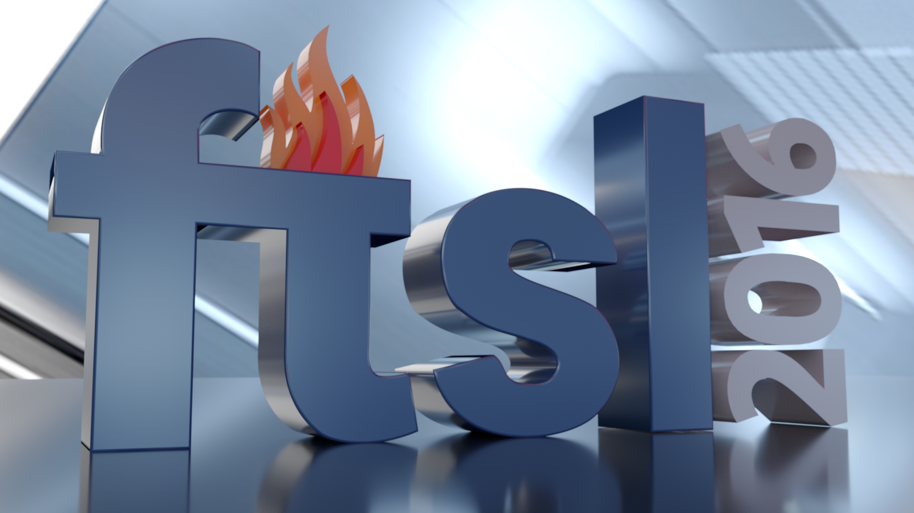

IX FÓRUM DE TECNOLOGIA EM SOFTWARE LIVRE
roomAv. Sete de setembro, 3165
IX FÓRUM DE TECNOLOGIA EM SOFTWARE LIVRE
de 27 a 29 de setembro
keyboard_voice
Palestras
realizadas por acadêmicos, estudantes, profissionais do mercado, empresas, políticos e pensadores com o intuito de aprofundar os conhecimentos científicos, técnicos, mercadológicos e sociais do Software Livre e da Liberdade do Conhecimento.
watch_later
minicursos
ministrados por profissionais a fim de transmitir conhecimentos práticos de um determinado assunto por meio de treinamentos e capacitação.
forum
Encontro de comunidades
comunidades em torno de ferramentas e tecnologias livre realizam encontros técnicos durante o evento..
Junte-se a 3000+ participantes
no maior e mais importante evento de Software
Livre de Curitiba e Região
sobre o evento
no maior e mais importante evento de Software
Livre de Curitiba e Região
sobre o evento

Patrocínio
Considerado o mais importante evento de Software Livre de Curitiba e Região e o maior evento gratuito em Tecnologia de Informação do Brasil. Entre em contato e conheça os planos de patrocínio para 2017.

Submissão de Trabalhos
Faça a submissão do seu trabalho no FTSL e participe como palestrante.
Voluntariado
Existem várias formas de contribuir. Se você esta disposto a ajudar a fazer um evento ainda melhor, entre em contato.

Divulgação
O material gráfico para divulgação do ftsl 2017 estará disponível em breve. Faça o download e ajude a divulgar.